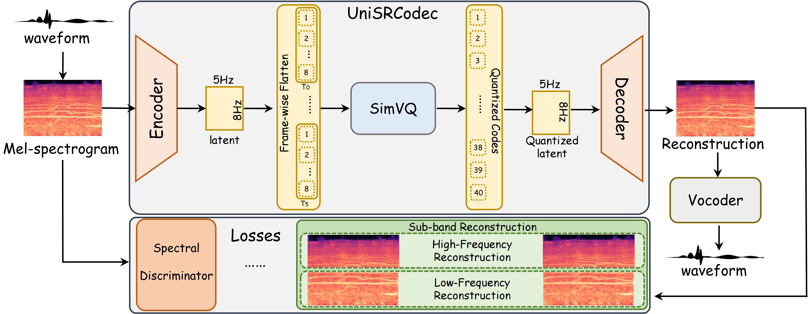

UniSRCodec:
Unified and Low-Bitrate Single Codebook Codec with Sub-Band Reconstruction
Zhisheng Zhang, Xiang Li, Yixuan Zhou, Jing Peng, Shengbo Cai, Guoyang Zeng, Zhiyong Wu
Abstract: Neural Audio Codecs (NACs) can reduce transmission overhead by performing compact compression and reconstruction, which also aim to bridge the gap between continuous and discrete signals. Existing NACs can be divided into two categories: multi-codebook and single-codebook codecs. Multi-codebook codecs face challenges such as structural complexity and difficulty in adapting to downstream tasks, while single-codebook codecs, though structurally simpler, suffer from low-fidelity, ineffective modeling of unified audio, and an inability to support modeling of high-frequency audio. We propose the UniSRCodec, a single-codebook codec capable of supporting high sampling rate, low-bandwidth, high fidelity, and unified. We analyze the inefficiency of waveform-based compression and introduce the time and frequency compression method using the Mel-spectrogram, and cooperate with a Vocoder to recover the phase information of the original audio. Moreover, we propose a sub-band reconstruction technique to achieve high-quality compression across both low and high frequency bands. Subjective and objective experimental results demonstrate that UniSRCodec achieves state-of-the-art (SOTA) performance among cross-domain single-codebook codecs with only a token rate of 40, and its reconstruction quality is comparable to that of certain multi-codebook methods.
Contents
UniSRCodec Workflow

Figure 1. The architecture and training procedure of the UniSRCodec.
Speech
These samples are original and reconstructed samples from LibriTTS test-clean.
| Model | Token Rate | Sample 1 | Sample 2 | Sample 3 |
|---|---|---|---|---|
| Ground Truth | - | |||
| MelCap | 260 | |||
| WavTokenizer | 40 | |||
| UniCodec | 75 | |||
| UniSRCodec-B | 40 | |||
| UniSRCodec-L | 176 |
Music
These samples are original and reconstructed samples from MUSDB.
| Model | Token Rate | Sample 1 | Sample 2 | Sample 3 |
|---|---|---|---|---|
| Ground Truth | - | |||
| MelCap | 260 | |||
| WavTokenizer | 40 | |||
| UniCodec | 75 | |||
| UniSRCodec-B | 40 | |||
| UniSRCodec-L | 176 |
General Audio
These samples are original and reconstructed samples from AudioSet.
| Model | Token Rate | Sample 1 | Sample 2 | Sample 3 |
|---|---|---|---|---|
| Ground Truth | - | |||
| MelCap | 260 | |||
| WavTokenizer | 40 | |||
| UniCodec | 75 | |||
| UniSRCodec-B | 40 | |||
| UniSRCodec-L | 176 |